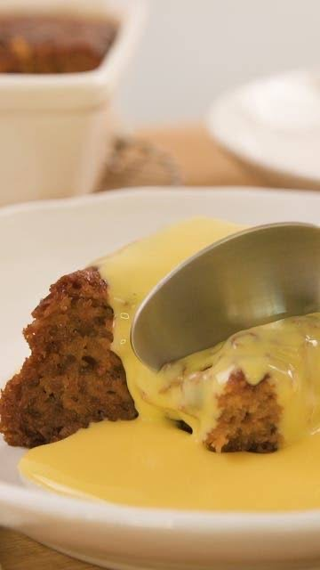

Malva Pudding
R45
It contains apricot jam and a spongy caramelized texture. A cream sauce is often poured over it while it is hot, and it is usually served hot with
custard and/or ice-cream.
Prep time: 10 mins
Serves: 8
Steps
- Place milk, 30 ml butter and jam in a small, heavy-based saucepan. Stir over low heat until butter and jam have melted. Remove from heat and add vinegar.
- Cream 60 g butter and sugar together, add eggs, one at a time, beating well after each addition until light and creamy.
- Sift flour, baking powder, bicarbonate of soda and salt together. Add, alternately with milk mixture, to egg mixture. Pour into a large, greased ovenproof dish or individual dishes and bake in a preheated oven at 180 °C for 45 - 60 minutes.
- Sauce: Combine milk, sugar and butter in a small, heavy based saucepan. Bring to boil and simmer for about 3 minutes. Remove from heat and add essence. Remove pudding from oven, prick the top and pour sauce over. Serve immediately.